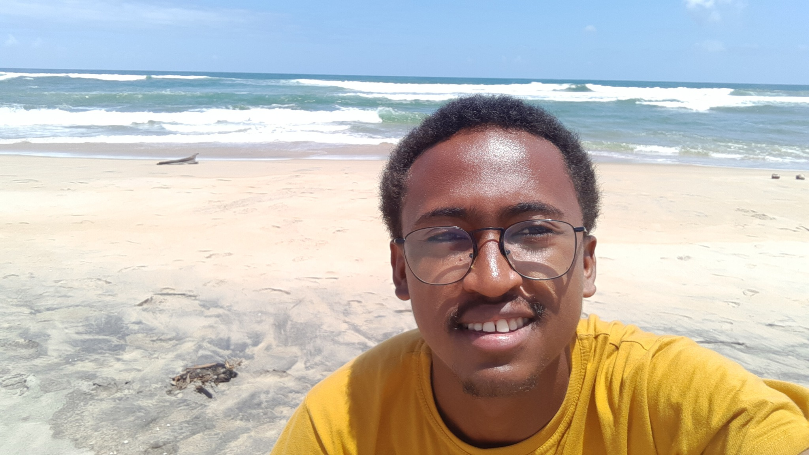

2025
Bayesian inference of a spatially dependent semi-markovian model with application to Madagascar COVID-19 data
PLOS ONE
Voir la publication
Doctorant en mathématiques appliquées, modélisation stochastique et apprentissage automatique
Je suis actuellement doctorant en mathématiques au sein du Laboratoire de Mathématiques et Applications de Poitiers, dans le cadre d’une collaboration entre l’Université de Poitiers et l’Université de Fianarantsoa. Mon sujet porte sur le deep learning pour la résolution et l’estimation paramétrique des équations différentielles stochastiques dirigées par des processus α-stables, ainsi que sur l’existence des solutions périodiques et ses extensions. Mon parcours associe recherche mathématique, enseignement supérieur et projets appliqués en analyse statistique.
Sujet : Deep Learning pour la résolution et l’estimation paramétrique des équations différentielles stochastiques dirigées par des processus α-stables,
et existence des solutions périodiques et ses extensions.
Financement : CIMPA Ambassador Program + IRN AFRIMaths CNRS.
Thème : « Équations aux Dérivées Partielles - Modélisation - Simulations ».
Spécialité : Probabilités appliquées. Sujet : Construction d’une dépendance spatiale dans des modèles stochastiques appliqués à la propagation épidémiologique.
Existence de solution et approximation numérique des équations différentielles stochastiques dirigées par des processus α-stables.
Modélisation stochastique du remplissage du delta de la Betsiboka (Nord-Ouest de Madagascar).
Thème : « Vert numérique : biologie mathématique et écologie théorique ».
Thème : « Probabilistic and Statistical Modeling with Applications in Epidemiology and Environment ».
Sujet : Extension stochastique des modèles compartimentaux épidémiologiques avec application sur la propagation du Covid-19 à Madagascar.
Gestion du programme pédagogique et encadrement du parcours.
Analyse et traitement statistique des données d’enquête.
Cours assurés : Structures des données et algorithme 1 (L1), Probabilités (L2), Programmation scientifique (L3), Analyse fonctionnelle (M1).
Préparation des élèves aux Olympiades francophones et internationales de mathématiques à Madagascar.
PLOS ONE
Voir la publicationBMC Public Health
Voir la publicationAfrican Conference on Research in Computer Science and Applied Mathematics
Voir la publicationAfrican Conference on Research in Computer Science and Applied Mathematics · Springer Nature Switzerland